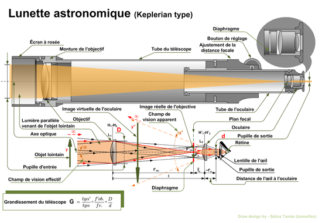

La lunette astronomique
Son invention n'est pas précisément attribuée. Certains écrits de Leonard Digges laissent supposer qu'il avait mis au point un prototype dès les années 1550, mais les premiers exemplaires explicitement décrits viendraient d'Italie (vers 1590) ou du nord de l'Europe (Pays-Bas, vers 1608). Giambattista della Porta la mentionna dans son ouvrage La Magie naturelle (1589).
Par la suite, plusieurs personnes cherchèrent à en obtenir le brevet : Hans Lippershey, qui fut le premier à faire une démonstration concrète d'une lunette d'approche de grossissement trois, à la fin du mois de septembre 1608, Zacharias Janssen qui en aurait vendu à la foire d'automne de Francfort en septembre 1608, et Jacques Metius (voir Jacob Metius ou frère de Metius). Ce dernier est soutenu par Descartes, qui parle de cette invention au début de sa Dioptrique :
« Mais, à la honte de nos sciences, cette invention, si utile et si admirable, n'a premièrement été trouvée que par l'expérience et la fortune.
Il y a environ trente ans, qu'un nommé Jacques Metius, de la ville d'Alkmaar en Hollande, homme qui n'avait jamais étudié, bien qu'il eût un père et un frère qui ont fait profession des mathématiques, mais qui prenait particulièrement plaisir à faire des miroirs et verres brûlants, en composant même l'hiver avec de la glace, ainsi que l'expérience a montré qu'on en peut faire, ayant à cette occasion plusieurs verres de diverses formes, s'avisa par bonheur de regarder au travers de deux, dont l'un était un peu plus épais au milieu qu'aux extrémités, et l'autre au contraire beaucoup plus épais aux extrémités qu'au milieu, et il les appliqua si heureusement aux deux bouts d'un tuyau, que la première des lunettes dont nous parlons, en fut composée. »
Dès que la lunette d'approche fut connue et commença à se répandre, plusieurs personnes, dont Thomas Harriot et Christoph Scheiner, la tournèrent vers le ciel au début de 1609pour observer les objets célestes. Mais c'est Galilée qui, à partir d'août 16091 établit véritablement la lunette d'approche comme instrument d'observation astronomique par l'ensemble de ses observations célestes et surtout par le regard neuf qu'il portait sur le ciel et les objets qu'il observait : il s'étonnait des phénomènes qu'il voyait et il les étudiait. Il construisait ses propres lunettes et leur donna d'abord un grossissement de six au lieu de trois, pour le porter progressivement à 20 puis à 30.

Une lunette est composée d'un objectif et d'un oculaire disposés de part et d'autre d'un tube fermé. Le tube peut être fixe ou télescopique comme dans le cas des longues-vues de marine. L'oculaire se situe, comme l'indique son nom, du côté de l'œil, et il est de petite dimension. L'objectif se situe de l'autre côté, et est généralement de plus grande dimension que l'oculaire.
Ces premières lunettes d'approche, terrestre ou astronomique, ont possédé un objectif convexe et un oculaire concave (voir description de René Descartes plus haut) dû au principe de hasard de leur invention par des lunetiers. Les plus récentes (voir description plus bas) possèdent objectif et oculaire convexes.
Source:https://fr.wikipedia.org/wiki/Lunette_astronomique